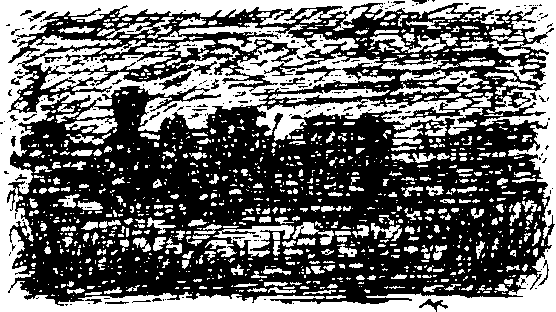

Ağaçların arkasına gizlenmiş olan evin çatısının tepesi zar zor görünüyordu. Bahçe parmaklıklarına ulaştıklarında Castringius evin etrafına baktı. “Tamamdır. Önden sen git," dedi suç ortağına.
Çekinme sırası Anton’daydı. Ötekinin, bir numara yapmasından korkuyordu. Uzun bir tartışmanın sonunda Castringius önden tırmandı, Anton da onu takip etti. Paltosunun kuyruğu dikenli tellere takıldı. “Bunlar da işin cilveleri,’’ dedi ortağı, alaycı bir edayla. Odaları profesyonel bir dikkatle taradılar, ancak ne gazete sahibinin çalışma odasında ne de başka bir yerde almaya değecek bir şey bulabildiler. Hayal kırıklığına uğramış olan Castringius, eski editörü hakkındaki fikirlerini ifade etti.
“Anlayamıyorum! Nasıl olmuş da bu adama hürmet etmişim? Şuraya bak, al sana on üç yıllık Rüya Aynası," dedi, Anton'a, ciltlenmiş gazeteleri göstererek. Anton ise o sırada bir zamanlar nefis mobilyalar, şimdiyse sefil döküntüler olan yıkıntılara kederle bakmaktaydı.
“Bu kadar aptal şaka yeter. İşe yaramaz esprilerini kendine sakla."
“Sessiz ol, yalaka! Ulvi şeylerden ne anlarsın sen? Bu ciltler, senin asla kavrayamayacağın bir sanatçının neredeyse tüm oeuvre’ünü içinde barındırıyor. Senin entelektüel ufukların benim saygın iş arkadaşımı bile anlayamayacak bir genişlikte." Anton’a küçümser bir ifadeyle baktı.
Yatak odasında işe yarar giyecekler aradıkları sırada bastırılmış bir inleme duydular. Batıl inançlı garson “Sesi duydun mu?” diye sordu, titriyordu ve korkudan az kalsın feneri yere düşürecekti. Genç bir kız, yatağın üzerinde battaniyelere sarılmış halde yatıyordu. Dehşete düşmüş olan kız, gözlerini faltaşı gibi açarak davetsiz misafirlere baktı.
“Eski yayıncımın kızı Louisa mı?! Tabii ki o benimdir!" diye haykırdı Castringius, keyifle. Yılışık adamdan korunmak için olduğu yerde büzülen kıza doğru yaklaştı.
“Özür dilerim, ama paylaşıyoruz. Baştan böyle anlaşmıştık." Anton, korkusunu üzerinden atar atmaz hakkını savunmaya başlamıştı. Castringius arkasını döndü, başı bir boğanınki gibi eğikti, hayır, boğadan çok sarhoş bir kurbağaya benziyordu. Kötü beslenmekten dolayı daha da sıskalaşan garsona öfkeyle baktı. Kısa, tıknaz bacakları yere sağlamca bastı, pençeli ellerini ve uzun kollarını birkaç kez savurup kükredi, “Burada öncelik bana ait ve hakkımı senin gibi aşağılık bir külhanbeyiyle paylaşmaya niyetim yok. Dilersen bir dene." Dişlerini gösterdi. Gücünü biliyor ve ona güveniyordu.
Castringius’tan daha kurnaz olan Anton işbirliğine girdiklerinden beri böyle bir çıkış bekliyordu ve savunma silahını tedbir olarak yanındaki bir kesede taşımaktaydı. Rüya Aynası'nın eski yıldızı, yüzüne bir avuç toz biber savrulunca neye uğradığını şaşırdı. Hasmını körlemesine yakaladı, kavradı ve sımsıkı tuttu. Gemi pervanesine benzeyen elleri Anton’un sırtında kenetlendi ve garsonun dizlerini büktü. İkili, uzun boylu Anton ve tıknaz Castringius, yerde itişmeye başladı. Önce yuvarlanarak odayı boydan boya geçtiler, sonra da açık kapıdan balkona çıktılar. Birbirlerine öyle bir nefretle yapışmışlardı ki korkulukların kırılmış olduğunu fark etmediler. İlk olarak evin bitişiğine inşa edilmiş bulaşıkhanenin çatısına, sonra da oradan kayarak üzeri kapanmamış lağım çukurunun içine düştüler.
Belirsiz bir “plof’ sesi duyuldu, yüzeye birkaç baloncuk çıktı ve sonra...
XVII
“Asıl özünün cismâni dünyaya girmeye niyeti yoksa fiziksel sevgi bir hiçtir. Nasıl olur da asıl özü istemediği bir şeye zorlamayı düşünecek denli küstah olabilirsiniz? Sizler asıl öz ile diğer şeyler arasında hiçbir ayrım yapmıyorsunuz. Olaya felsefi açıdan bakan ben, hareketlerinizi kınıyorum.”
Tomassevic Arazisi’ndeki toplu sekslere berberin tepkisi bu olmuştu ve yanlış zamanda yaptığı bu tirada son vermeyi reddettiği için onu, boynuna bir ip geçirip kendi dükkânının tabelasına bağlayarak asmışlardı. Pirinç tasın altında sallanan berberi gören bir şakacı ise bir evin duvarından çaldığı bir tabelayı zaman ve uzay otoritemizin bacaklarına asmıştı. Tabelada “Kiralık” yazıyordu.
Hastaları yarım, hatta çeyrek tayınla beslenirken Lampenbogen son gününe dek iyi yaşadı. Rüya Ülkesi halkı bu durumdan pek hoşnut değildi ve Lampenbogen’in barakasında, dışarıda olmayı hastanedeki keyifsiz işlere tercih eden hasta bakıcılar tarafından da şevkle desteklenen küçük bir ihtilal yapıldı. Buz kutusunda hala üç kızarmış piliç, biraz çikolata ve bir parça peynir vardı. Hastalar, pek iştah açıcı gözükmese de, bu özel kumanyadan kendi paylarına düşeni istediler. Lampenbogen ise bunu kabul etmedi. Onlar da, ölmesi gerektiğini söylediler. Bunu da kabul etmedi. Gözü dönmüş hastalar hızla fikir birliğine varıp doktorlarının üzerine çullandılar. Hasta bakıcılar ve diğerleri Lampenbogen’i alt ederken yatalak hastalar da onları izledi. Çenesi kırılmış zavallı bir kadın, yağ tulumunun üzerine kloroform döktü. Hastalar, kendileri fazlasıyla acı çektikleri için başkalarına da nadiren acırlar. Şişman doktor uyuştuktan sonra buz kutusunu kırarak açıp içindeki lezzetlerin tadına baktılar. Doktoru bir gaz borusuna geçirdiler. Bu, zayıf haldeki hastaların çok kolay yapabileceği bir şey değildi. Hasta bakıcılar da vahşi cinayetlerinin delillerini yok etmek için bir ateş yaktı. Böylece Lampenbogen hayata, çevrilerek kızarırken veda etti, çok lezzetli olduğu da söylenemezdi. Üst kısımları çiğ ve kızarmamış, kamı ise çıra gibi yanmıştı. Sadece yan tarafları güzel ve gevrekti.
XVIII
Başı açık, yaşlı bir adam, Uzun Cadde’den nehre doğru hızlı ama ürkek adımlarla koşuyordu. Paltosunun kuyrukları, arkasından kanatlar gibi savruluyordu. Yeleğinin sadece alt yarısı iliklenmişti. Başını hararetle sallıyor ve kendi kendine konuşuyordu; etrafının farkında olmadığı belliydi. Suya varınca birkaç saniye durup tereddüt etti, sonra ciddi bir havaya bürünerek kumun içinde adımlar attı. Leyleğe benziyordu ve kendi kendini azarlıyordu. Negro çağıldıyordu. Nehir bazen sanki acıkmış gibi sesler çıkarıp dalgalarıyla kıyıdan kaşıklar dolusu kum alıyor, bazen ise matem içinde, çok sesli mistik bir şarkı söylüyordu. Köprüde bir lambanın donuk ışığı gözüküyor, yaydığı hafif parlaklık suyun üzerinde oynaşıyordu. Yaşlı adam bir karara vardı ve ağır ağır nehre girdi. İlk başlarda dalgalar sadece dizlerine kadar geliyordu. Debelenerek cebinden bir gözlük kabı çıkardı, gözlüklerini burnunun üzerine yerleştirdi ve kutuyu cebine geri koydu. Birkaç adım sonra su sıska kalçalarına varmıştı bile. Akıntıya kapılmamak için mücadele etmesi gerekiyordu. Ateşli aşk yeminleri ederek ellerini kalbine bastırdı. Sonra cebinden küçük, ne olduğu anlaşılmayan bir şey çıkardı, miyop gözlerinin önünde tuttu ve adeta onları incelermiş gibi dalgaların üzerine eğildi. Su boynuna, burnuna ulaştı ve birkaç saniye sonra tek görülebilen, beyaz saçtan oluşmuş bir adacık oldu. Minik bir gemiyi andıran ufak, parlak bir cisim nehir aşağı yüzdü. Akıntıyla sürüklenirken kendi etrafından döndü ve olta mantarı gibi suya batıp çıktı. Gümüş renkli kâğıtlara sarılı küçük bir kutuydu ...acarina felicitas...
XIX
Bataklık istasyonu yavaş yavaş kemiriyordu. İstasyon binası yana eğilmiş, peron ise çamur ve sazlarla kaplanmıştı. Çamur, küflü kapılardan geçerek bekleme salonlarına yayılıyor, banklardan ve döşemelerden kara kurbağalarının hüzünlü şarkıları duyuluyor, kafeteryanın tezgâhında semender ve tırtıllar dolaşıyordu. Pearl’ü işgal etmiş, bahçeleri yağmalamış ve insanları korkutmuş olan sayısız yaratıkların hepsi kasvetli gri renkleriyle millerce alana uzanmış olan bataklıktan çıkmıştı.
Fakat bataklık hayat verdiği kadar da hayat alıyordu. Rüya Ülkeli sayısız çiftçi ve balıkçı onun nemli toprağının altında uyuyordu. Hilekâr! Liken halısının altındaki düğüm düğüm olmuş yılanlara rağmen nasıl da zararsız gözüküyordu! Çıt çıkarmadan ev yüksekliğinde korkunç alevler püskürtür, yuvalarında uyuyan balıkçılların ödünü koparırdı. Kendi içinde yeterli besini bulabilen, yaşayan bir organizmaydı: kaplanları domuzlarını yer, tilkileri geyiklerini avlardı.
Kırlar, Rüya Ülkesi’nde kutsal sayılırdı. Bazı yerlerde Üzerlerine anlaşılması güç, aşınmış işaretlerin kazılı olduğu eski, yosunla kaplı taşlar vardı. Avlarının iç organlarını bu taşlara koymak avcılar arasında bir gelenekti. Balıkçılar turnabalığı ve tatlı su kurt balıklarının ciğerlerini, köylüler ise getirdikleri bir demet mısırı, birkaç elmayı veya bir salkım üzümü küçük piramitler halinde buralara dizerdi. Bataklık bu hediyeleri daima minnetle kabul eder ve tüketirdi. Eskiden Patera sıklıkla buralara gelir ve geceleri kutsal yerlerde dolaşırdı. İnsanlar onun Rüya Ülkeliler adına “Bataklık Ana"ya kurbanlar verdiğini ve kan ile cinselliğin ön planda olduğu ayinler yoluyla, Bataklık Ana’yla arasındaki işbirliğini pekiştirdiğini söylerdi. Patera buraya gelmeyeli uzun zaman olmuştu. Artık herkes bu gizli ayinleri biliyordu ve “Patera’nın kanı aşkına" diye sövüyordu. Bunun sonuçları da her yerde kolayca görülebiliyordu. Eski bir tapınak deyişi olan “Kanın karşılığı deliliktir," doğrulanmıştı. Değinilmesi gereken başka bir konu ise nehrin diğer yanındaki mavi gözlü kabilenin tüm bu olan bitenlerden uzak duruyor olmasıydı.
Bodur çalıların ve küçük çam ağaçlarının arasındaki bu ibadet yerlerinden uzakta, yumuşak toprağa parlak renklerle boyanmış tahta sütunlar dikilmişti. Buralar da kutsal noktalardı, fakat biraz daha farklılardı. “Neşeli geceler” buralarda kutlanıyordu. Hasat zamanında bazı gecelerde Rüya Ülkesi çiftçileri buralara saman ve çiçeklerle dolu arabalar getirirler, toprağın üzerinde hoş kokulu yüklerinden bir tabaka oluştururlardı. Ateşler yakılır, elma şarapları fıçılardan köpürerek akar, bayramlıklarını giyinmiş insanların neşesi serbest kalırdı. Hikâyeler anlatıldıktan, oyunlar oynanıp danslar yapıldıktan ve bol miktarda yemek yenildikten sonra genelde meyve kokan ılık bir rüzgâr, ateşleri söndürürdü. Her biri rahat yuvalarına çekilen çiftler sabaha kadar uyumazdı.
İstasyondaki geniş, yıkık lokomotif hangarının içi hala bir hayvanat bahçesi gibi kokuyordu. Hayvanların ekşi kokulu dışkıları yerdeki siyahımsı çamur birikintilerine karışmıştı. Bugün ise rutubetli, çamurla kaplı hangarda bir hareket vardı. Başlıklı paltosuna sarınmış olan bir adam, bir ateşçi, eski lokomotiflerden birini yağlayıp tamir ediyordu. Her parçayı dikkatle inceleyip cömertçe yağlıyordu. Sonra ateşi yeniden karıştırdı. Kazanın kapağını açtığında kor halindeki kömürlerin kızıllığı, kuvvetli terli yüzünde parladı: bu Hercules Bell’di.

Haftalarca önceden rayları kontrol etmiş ve yönleri ayarlamıştı. Lokomotif ilerlemeye başladı; önce yavaş ve gıcırdayarak, sonraysa avazı çıktığı kadar kükreyerek. Bell, makineyi harabe halindeki binanın dışına sürdü. Birkaç şaşkın baykuş da kendisine eşlik etmekteydi. Önceden ayarladığı bir döner platform yardımıyla ağır ağır ana ray hattına yanaştı. Yeterli kömürü vardı ve en kötü ihtimalle stoğunu yol üzerindeki istasyonlarda tekrar doldurabilirdi.
Çabalamaktan her yanını ateş basmıştı, paltosunu çıkardı. Ateşi yeniden beslerken basınç göstergesine baktı ve manivelayı çekti. Eski lokomotif ilerlemeye başladı. Tehlikeli bir yolculuktu. Rayın iki yanındaki toprak setin aşağı kısımları çökmüştü ve rayın uzun bir kısmı bataklıktan gelen suyun altındaydı. Lokomotifin ön tarafından ince bir duman püskürdü, tekerlekler sazları biçerek ilerledi ve arkada uzunlamasına bir iz bıraktı.
Bell, kazanı adeta patlatana dek ateşi besledi. Lokomotif yamulmuş ve paslanmış rayların üzerinde sıçrayarak ilerlerken kazan korumalığı ve etrafındaki parçalar kıpkırmızı kesildi. Amerikalı, terk edilmiş çiftliklerin ve kır evlerinin, solup kurumuş ormanların yanından geçti. Rayların üzerindeki yarı çiğnenmiş bir at leşini kenara çekmek için bir kez durması gerekti. Sonra lokomotif iki saat boyunca, açık kırlara varıp durana dek oflayıp poflayarak ilerledi. Bell ateşe kömür attı, kazanın üzerine tükürüp cızırdattı ve aşağı atladı. Bir süre rayları takip etti, sonra devasa ağaçların yukarı uzandığı ufak bir vadiye daldı. Çürümüş sarmaşıklar ve toprağı kaplamış olan likenler onun hızım kesmeye çalıştı. Yarım saat kadar sonra siyah bir duvarın üzerinde soluk bir ışıkla aydınlanan bir pencere gördü. Duvar sanki göğün sonsuzluğuna doğru yükseliyordu. Amerikalı, titremeyen eliyle bahçe kapısını açtı, pencerenin altına süzüldü ve içeriye baktı.
Yeşil gölgeli bir parafin lambası mürekkep lekeli bir masanın üzerinde yanmaktaydı. Yazılarla kaplı kağıtlar, formlar, mühür mumları, kurşun mühürler etrafa saçılmış haldeydi. Alçak bir merdiven korkuluğuna çiviler ve teller tutturulmuştu. Dar odanın ortasında, Pearl’deki bir kurum tarafından her yere dağıtılmış olan çok başarısız bir Patera portresi vardı. Burası, Rüya Ülkesi’nin sınır muhafızının ofisiydi. Yaşlı adam, muşambayla kaplı bir koltukta uyumaktaydı. Eline rahatça yaslanmış olan sakallı yüzü ona narin bir hava katıyordu. Yönetmeliğe göre, Dev Duvarlar’da yalnızca yayaların kullanabildiği bir kapı olan “Küçük Kapı"nın anahtarı kemerinden sarkıyordu; bir metre uzunluğundaki asıl anahtar özel bir demir kasada saklanıyordu. Yaşlı adam, ofisteki işleri iki oğluyla birlikte yürütüyordu. Onların evi hemen yandaydı, onun ötesinde de sınır muhafızları ve gümrük memurlarının kışlası vardı. Bütün binaların arkaları devasa dış duvara yaslanıyordu.
Tüm bu detaylar dışarıdaki izleyici tarafından biliniyordu. Daimi alacakaranlığa alışık olduğu için hava aniden kararınca şaşkınlıkla etrafa baktı. Bulutlar adeta yere kadar inmişti ve Amerikalı sınır durağındaki depoların dalgalı demir çatılarını bile zar zor seçiyordu. Başlığını indirdi ve aşırı ısıtılmış odaya bir kedi gibi süzüldü. Sağ elinde lokomotiften aldığı ağır demir levyeyi tutuyordu. “Bir eksik ya da bir fazla, artık fark etmez," diye düşündü. Gözü, uyuyan muhafızın üzerindeydi. Adamın başı kımıldadı ve koltuğun kolçağına düştü, ama uyanmadı. Demir levye adamın alnının ortasına güçlü ve isabetli bir darbeyle indiğinde suya çarpan elin çıkarttığına benzeyen bir ses duyuldu. Kafatasının ön tarafı ezilmiş, gözleri yerlerinden dışarı uğramıştı. Bu görüntü sakalıyla birleşince ortaya grotesk bir tablo çıkıyordu. Oturduğu yerde tüm bedeni hafif bir titremeyle sarsıldı.
Amerikalı, Patera’nın portresi önünde zarif bir reverans yaptı. “Bu sefer senin için fazla zekiceydi!" Sonra hızlı ve kendinden emin hareketlerle ölü adamın kemerindeki anahtarı aldı. Koltuğun yanında, yerde sönük bir fener vardı. Onu almak için eğildiğinde bir şey bileğini mengene gibi kavradı. Ölü adamdı. Ya da az önce sürtündüğü san parmakları. Ceset oracıkta yatıyordu, ölü ve hareketsizdi, fakat o korkunç parmaklarda öyle bir kuvvet vardı ki çeliği bile hamur gibi ezebilirdi. Bell “Patera!" diye bir çığlık attı. Parmaklardaki baskı, sanki bir makineden güç alıyormuşçasına muntazaman arttı. Bileği birkaç dakika sonra kırılacaktı; şimdiden hissizleşmeye başlamıştı. Korkunç hasmının eline dişlerini geçirdi, ama çok güçsüzdü, kendi elinin kopmasına da az kalmıştı. Dehşet içinde etrafına bakınırken merdiven korkuluğuna asılmış olan bahçe makasını gördü. Bir adımda makasın yanına vardı. Ağır cesedi de beraberinde sürüklüyordu. Usta darbelerle yaşlı adamın elini kesti. El hemen gevşedi ve düştü. Bell derin bir oh çekti. Sesi adeta mistik bir havada çıkmıştı, Patera’nın portresi, briyantinli bukleleri ve ortadan ayrılmış saçları, Amerikalı ’ya değişmez, dostane gülümsemesiyle baktı. Bell sönük feneri alarak dışarı çıktı.
Duvara vardığında dev tünel tarafından yutuldu. Amerikalı’yı ateş basmıştı, planının başarılı olup olmadığım şimdi görecekti. Hesaplarına göre Avrupa’dan gelen yardım yakınlarda olmalıydı.
O yardıma ihtiyacı vardı, onsuz olmazdı. Rüya Ülkesi’nin her an daha da tehlikeli: bir hal alan halkıyla, yalnız başına mücadele edemezdi.
Küçük Kapı’yı açtı ve soğuk gece havasım içine çekti. Sonra yanında getirdiği bir fişeği attı. Karanlık gökyüzünde altın renkli bir fıskiye yükseldi, en yüksek noktaya gelene dek birkaç kez kıvrılıp yıldızlar saçarak patladı. Amerikalı umutla titreyerek bekledi. İşaretine cevap gelecek miydi? . . . Hiçbir şey gelmedi. Her yer sessiz ve karanlıktı. Yanlış hesaplamış olmalıydı! Düşkırıklığına uğramış bir halde feneri devasa bronz kapıya tuttu. Kapının üzerinde ağır demirden şeritler vardı. Geri mi dönmeliydi? Gözlerini yine uzaklara dikti. Oradaydı! Soluk bir ışık gökyüzünde birkaç saniye boyunca belli. belirsiz çaktı ve hemencecik kayboldu. Sonra kuyruklu yıldıza benziyen mavimsi bir parıltı daha oldu. Rus arama ekibinin ışıklan! Bütün gücüyle sakin olmaya çalışmasına rağmen, içini çılgın bir keyif ve gururlu bir tatmin duygusu kapladı. Başarmıştı! Bell, kapıyı orduların girmesi için açık bırakıp var gücüyle geri koştu. Fenerinin saçtığı zayıf ışık tepelerin arasında kayboldu; nefes nefese lokomotifine döndü. Arşiv’in gerçek evlatları olan sınır muhafızları hiçbir şey fark etmemişlerdi.
Amerikalı, lokomotifi geri geri sürüyor, ateşe durmadan kömür atıyordu. Lokomotifin bacasından çıkan kırmızı duman karanlık arazinin üzerinde hızla süzüldü. Cesur Amerikan girişkenliği başarılı olmuştu! Heyecandan coşmuş olan Bell lokomotifin sirenine asıldı ve sirenin kasvetli, tiz çığlığı karanlık gecede çınladı. “Artık bu ülkeyi düzene sokacağız;” diye kendi kendine yemin etti. Bu arada eli şişip kocaman olmuş,. acısı da oldukça artmıştı. Üzerine motor yağı dökerek acıyı dindirme çabalan sonuçsuz kalmıştı, fakat bu acı, coşkusunu azaltmaya yetmiyordu.
Kızıl bir parıltı, Pearl yönünde gökyüzünü kaplamaya başlamıştı. Hızla koyulaşıyordu. Bulutları kaplamış ve bir süre sonra tüm ufuk çizgisine yayılmıştı. Amerikalı bu yeni parlaklığı endişeyle izledi. Paslı canavar hızını kesmeden bir çamur denizine daldı ve makinisti yapışkan sıvıyla kaplayan yüksek, kara bir dalga çıkardı. İkiye ayrılmış olan bir çalı yılanının parçalan Amerikalı’nın ayağının dibinde oynaşıyordu. Isınan kül deposu neredeyse yarısına kadar suya batmıştı ve tıslıyordu. Basınç göstergesi doksan dokuza varmıştı, kazan her an patlayabilirdi. Amerikalı, eline geçen bir somun anahtarıyla sübabı sıkarak fazla buharın çıkmasını önlemeye çalıştı. İstasyon ileride göründüğünde durdu ve sabırsızca aşağı atladı. Lokomotifi bırakıp aceleyle şehre doğru yollandı.
Alevler içindeki Arşiv her şeyi akkor bir parlaklıkla kaplıyordu. Sürekli ufak patlamalar oluyor ve yanan kâğıt parçacıkları şehrin üzerinde ateşli kuşlar gibi uçuşuyordu. Sokaklarda uluyup kahkahalar atan bir güruh vardı.
Amerikalı titreme nöbetine girdi ve bir taş yığınına oturmak zorunda kaldı. Bitkin, tüm gücü tükenmiş bir halde mırıldandı, “Patera halefine sadece dışkı bırakıyor.”
XX
Arşiv tüm hazineleriyle alevlere gömülürken nehir kenarında, her zamanki yerimde oturuyordum. Göğün parlaklığı nehrin dalgalarına yansıyordu. Tanıklık ettiğim tuhaf olaylar sayesinde duyarsızlığımdan sıyrılmıştım. Donuk kalbimin eridiğini hissediyordum; Rüya Ülkesi halkı üzerine çökmüş olan ezici felaketler beni de ezmeye yelteniyordu. Ölümün hangi şekilde olursa olsun gelip beni huzura kavuşturacağını umuyordum. Sonun bu dehşet gecesinde geleceği aşikârdı. Ama kader niçin bu kadar. beklemiş, neden en acı verici işkencelere kendisi de katlanmıştı?
Rüya Ülkesi insanlarının görme duyuları bozuluyordu. İlk başta her şeyin etrafında bir gökkuşağı parlaklığı söz konusuydu; sonraları ise tüm boyutlar bozuldu, örneğin küçük kulübeleri çok katlı kuleler olarak görmeye başladılar. Bu yanlış perspektifler haliyle büyük korku yarattı.
İnsanlar öyle olmadıkları halde etraflarının sarıldığını düşünüyor, sokakların tepesinde ya da ince temeller üzerinde binaların durduğunu sanıyorlardı. Karşıdan tek başına gelen insanları çift ya da daha fazla, hatta bir güruh olarak görüyorlardı. Gerçekte var olmayan şeyler üzerine basmamak için ayaklarını kaldırıyorlar ya da bir uçurumun kenarında olduklarını sanarak yönlerini bulmak için dört ayak üzerinde yürüyorlardı.
Birçok kişi toplu intiharlara kurban gitti. Tam bir tükenmişlik noktasına geliyorlar sonra da kendi kendilerini yok etmelerinin emredildiği rüyalara boyun eğiyorlardı. Geride kalanların kafası ise öylesine karışıktı ki geçirdikleri son saatlerin acılığını bile fark etmiyorlardı.
Bir ara Patera’nın ortaya çıktığı söylentisi yayıldı. Dört hizmetkâr tarafından taşınan bir tahtırevan üzerinde pazara götürüldüğü, yüksek bir taç ve incilerle bezenmiş yeşil kadifeden bir kaftan giydiği, insanları bir kardinal gibi kutsadığı söyleniyordu. Onu gören Amerikalı, yerden bir taş kapıp delirmişçesine Efendimiz’e saldırmıştı. Patera'nın aslında balmumundan yapılmış olan kafası bir yumurta gibi patlayıvermişti. Gözleri cıvayla dolu cam toplardan yapılmış, giysileri ise samanla doldurulmuştu. Efendimiz aldatmacadan başka bir şey değildi.
Ordu son kurşununu atalı çok olmuştu. Kirli kırmızı pantalonlu askerler kızgın güruha süngülerle saldırıyordu. Şnapsla alevlenmiş akıllarında merhamet yoktu. Amerikalı, askerlere katıldı ve onlar da sahte, Patera bebeği hikâyesini bildiklerinden Amerikalı’nın komutaya geçmesini coşkuyla karşıladılar. Arşiv, Postane ve Rüya Ülkesi Bankası yanmakta, sokakları gündüz gibi aydınlatmaktaydı.
Yüksek rakımlı Fransız Mahallesi’nden pislik, çöp, pıhtılaşmış kan, sakatat, hayvan ve insan cesetleri lav dalgalan gibi akıyordu. Rüya Ülkesi sakinlerinden son kalanlar da bu yanardöner renkli çürümüşlük potburisinin içinde güçlükle hareket ediyordu. Konuşma yeteneklerini kaybetmişlerdi. Artık iletişim kuramıyorlar, sadece anlamsız sesler çıkarabiliyorlardı. Neredeyse tümü çıplaktı. Güçlü erkekler zayıf kadınları çürümüş et akıntısına itiyor, çekim gücüne kapılan kadınlar iz bırakmadan dibe batıyordu. İnsanlar bir lağım çukurunu andıran Büyük Meydan'da güçlerinin son damlalarını da kullanarak ölene dek birbirlerini ısırıp boğazlıyordu.
Cansız izleyicilerin katılaşmış bedenleri pencerelerden sarkıyor, gözlerinden Pearl’ün yerini alan bu ölüler krallığı yansıyordu.
Kopmuş kol ve bacaklar, eğri parmaklar, sıkılmış yumruklar, şişmiş hayvan karınları, uzun san dişlerin arasından mavi dillerin sarktığı at kafalarıyla örülmüş ölüm örtüsü acımasızca ilerliyordu. Hepsinin üzerinde ürkütücü, yanıp sönen bir ışık parlıyordu, bu Patera’nın tanrılaşmasıydı.
XXI
Tüm bu olaylar mavi gözlü kabileyi hiç etkilemiyordu. Nehrin karşı tarafını sükûnet içinde izliyorlardı. Ancak orada da bir hareketlilik vardı, çünkü tuhaf evlerinin önüne büyük kazanlar çıkarmışlardı. Gece gündüz bu kazanların başında bir şeyler yapıyorlardı. Bir şeylerin pişirildiği kesindi. Rüzgâr, nehrin üzerinden ekşi, kötü kokulu ve bizi öksürten dumanlar taşıyordu, fakat pis koku bir süre sonra hoş bir kokuya dönüştü. Normalde ağırbaşlı ve ciddi olan mavi gözlü halk kazanların çevresinde dans etmeye, monoton ve uzun şarkılar söylemeye başladı. Yerleşim’in pislik vebası ve hayvanlardan hiç etkilenmediğini uzun süre önce fark etmiştik ve bazı çeteler oraya gitmek istemişti. Ancak köprü çökmüş ve dağılmıştı. Hiç kayık yoktu ve karşıya yüzmek, nehirdeki sürüngenler yüzünden, intihar demekti.
Nehir kıyısında, köprü payandalarından birine oturmuştum. Anlayışımın ötesindeki görüntüleri artık kaldıramıyordum. Kendimi öldürmeye karar vermiştim. Büyülenmiş bir halde birkaç dakika sonra mezarım olacak bulanık sulara baktım. Müthiş bir olayın eşiğinde olduğumu hissediyordum.
Yavaşça kendimi aşağı bıraktım. Sanki bir rüyada gibiydim.
Fokurdayan bir kükremeyle, suyun ortasında ağzı açık bir huni belirdi ve nehir bir karadeliğin içine çekilmeye başladı. Değirmenden arta kalan yanan kısımlar, beyaz bir duman çıkarıp tıslayarak yok oldu.
Uzun Cadde çöktü ve bulunduğum yerden normalde görünmeyen Saray’ı gördüm. Kırmızı parlaklıkta kayıtsızca dikiliyor, koca gövdesiyle yıkıntıların üzerinden yükseliyordu. Boru seslerinin duyulması gerektiğini, Kıyamet Günü’nün geldiğini düşündüm. Negro, yatağında beliren kara girdabın açgözlü midesine köpüklü akıntılar çıkararak çekildi. Balık ve kerevitler çamurda ve su bitkilerinin üzerinde kıvranır halde kaldı.
Sonra diğer taraftaki nehrin kumluk yatağından gelen ufak bir grup gördüm: Mavi gözlü kabile. Kafaları önlerine eğik, yanımdan geçtiler. Başlarında, yüzündeki yarığa benzeyen kırışıklarla bin yaşındaymış gibi gözüken kambur bir yaratık yürüyordu. Tuhaf bir biçimde yüksek olan alnında gümüşi perçemler vardı. Bir an için bunun bir kadın olabileceğini düşündüm. Ve sonra diğerleri! Hepsi uzun boylu ve sıskaydı. Diğerlerinden daha uzun boylu olan ve daha dik yürüyen sonuncusu bana döndü ve kendimi hayatımda gördüğüm - Patera’nınki hariç - en güzel yüze bakar buldum. Kusursuz bir yumurta biçimindeki kafası ince porselenden yapılmış gibiydi. İnce, şeffaf burun delikleri ve dar, düz çenesi ile aşırı zarif Mançu prenslerini ya da Budist efsanelerinde geçen melekleri andırıyordu. Uzun, ince bilekleri çok gelişmiş bir ırkın üyesi olduğunu belli ediyordu. Kafası tıraş edilmiş, cildi gergin ve pürüzsüzdü. Mavi bana gözleriyle bakışı sözcüklerle anlatılamazdı. Onu reddetmem mümkün değildi. Peşinden gittim.
Yer aniden kauçuk gibi gerilmeye başladı ve hava, kulakları sağır eden bir patlamayla titreşti. Sanki yüzlerce top atılmıştı. Saray’ın cephesi yavaşça eğildi, rüzgârdaki bir bayrak gibi dalgalandı ve Büyük Meydan’ı cüssesi altında ezdi.
Pearl’deki tüm kulelerde, ölmekte olan şehir için müthiş bir veda şarkısı söyleniyormuşçasına çanlar çaldı. Gözlerim yaşlarla doldu. Ben de Rüya Ülkesi’nin cenaze töreninin bir parçası gibiydim.
Mavi gözlü adamı takip ederek kayalık bir uçurumdaki dar bir kapıdan geçtim. Az sayıda meşaleyle aydınlatılmış eğri basamaklardan yukarı çıktık. Rehberlerim yandaki duvara oyulmuş bir odaya girdi, ama ben güvenli bir yer bulmak adına daha yükseklere tırmanmaya devam ettim. Sonunda açık havaya çıktım. Üzerimdeki gökyüzü kırmızıydı. Uçurumun tepesindeki eski kaledeydim. Hala şehri hedef almış halde duran birkaç top vardı, fakat çoğunun arabası kırılmış, bronz namluları siperlere dayanmıştı. Cevher dağı, üç yüz metre boyunda bir eriyik damlası haline gelip aktı gitti. Yere oturdum. Aşağıda tünellerden oluşmuş bir labirent vardı. Gözlerime inanamıyordum. Şehrin temeli, köstebekler tarafından kazılmış gibi çökmüştü. Geniş bir tünel, Saray’ı Büyük Meydan’a bağlıyordu. Diğer tüneller ise kırlara doğru uzanıyordu. Artık tavansız kalmış olan bu dehlizler Negro’nun sularıyla doluyor, ayakta kalan binalar da ağır ağır batıyordu. Şehrin diğer yanında ise bataklık giderek yaklaşıyordu.
Çınlama durdu. Büyük Saat Kulesi hariç bütün kuleler yıkılmıştı. Muhteşem çanın tok sesi havada yankılandı. Neredeyse hiç hayat belirtisi yoktu. Yalnızca ufak bir insan grubu hayatta kalmışa benziyordu. Telle kontrol edilen bir kukla gibi farklı yönlere doğru dağılıp yeniden bir araya geliyorlardı. En azından yukarıda bulunduğum yerden böyle gözüküyordu.
Aşağıdaki insanlar amaçsız bir kovalama içerisinde gibiydiler. Sonunda, duyulmaz bir emre itaat ederek, hoplayıp zıplayarak yıkıntıların üzerinden geçtiler, nehre yöneldiler, kuru nehir yatağını geçtiler ve kendilerini Yerleşim’e attılar.
Bulunduğum yüksek yerden bile hissedebildiğim buz gibi bir rüzgâr yerde kocaman bir delik açtı ve hücum eden grubu yere yuvarladı. Sonra ürkütücü delik soluğunu çekti. Kalasları, kirişleri ve insanları içine çeken bir girdap oluştu. Birkaç tanesi kaçıp Yerleşim’deki evlere saklanmaya çalıştı. Rüzgârlar dindi ve karanlık delikten bir deve kafası dikkatle dışarı uzandı. Boynu sonsuzluğa uzanıyormuş gibiydi. Zeki bakışlarla etrafı inceledi ve boynunu oturduğum yere doğru uzattı. Sonra sessiz bir kahkaha attı ve geri çekildi.
Kulübeler hareket etmeye başladı, değirmenler davetsiz misafirlere yelpazeleriyle vurdu, çatılardaki dağınık samanlar dikildi, çadırlar içlerinde rüzgârlar esiyormuşçasına şişti, ağaçlar dallarıyla insanları yakaladı, direkler saz gibi eğildi. En sonunda küçük tapınak ve evler birbirlerinin üzerine çıkarak evlerin karanlık ve anlaşılmaz lisanında kasvetli, yüksek, rahatsız edici bir sesle tuhaf sözcükler söylediler.
Su dolu dehlizlerde halen ölü bedenler yüzüyordu, fakat yavaş yavaş toprağa çekilmeye başlamışlardı. Sonra her şey bulanıklaştı. Sanırım son gördüğüm şey Yerleşim’deki evlerden oluşan piramidin yere devrilip parçalanmasıydı.
Aşağıdaki olaylarla aramda bir su katmanı var gibiydi. Her şeyin üzerine bir pus çöktü, ateşler bulanıklaştı. Birkaç kez birilerinin çığlığını duyduğumu sandım; uzun uzun “Ohooo, ohooo” diyorlardı. Sonra hiçbir şey göremez oldum, her şey kalın bir sis tabakasıyla kaplanmıştı. Yüzümün önündeki elimi bile zor görüyordum.
Kısa bir süre içinde etraf aydınlandı. Gökyüzünde büyük, parlak bir disk belirdi. Göğün koyu maviliğine parıldayan sayısız noktacık yayıldı. Bunlar ay ve yıldızlardı. Onları üç yıldır görmemiştim. Üzerimizdeki bu muazzam dünyayı tamamen unutmuştum ve kendimi gökyüzünün sonsuzluğunda küçücük hissettim. Isıran soğuk hava kemiğime kadar işliyordu. Titreyerek aşağı baktım. Geniş bulut kümesi, Rüya Ülkesi’nin gökyüzü, alçalmıştı.
Sonra altımda kıvranan bulutlarda boğuk bir gümbürdeme oldu. Gök, Mahşerin Dört Atlısı hücuma geçmiş gibi gürledi Gürültü dalgalanmaya devam etti, sarp dağlara çarptı, yankılandı, yeniden yankılandı, zayıfladı ve kulakları sağır edercesine arttı, yayıldı, arazilerde, dağlarda çınladı, hiç bitmeyecek gibiydi, yavaş yavaş yok oluncaya dek çınlamaya devam etti.
Bu, Rüya Ülkesi’nin sonuydu.
Toprak gri bir tabakayla kaplıydı. Ufukta, ayışığının altında, Tien Shan buzulları parlıyordu.